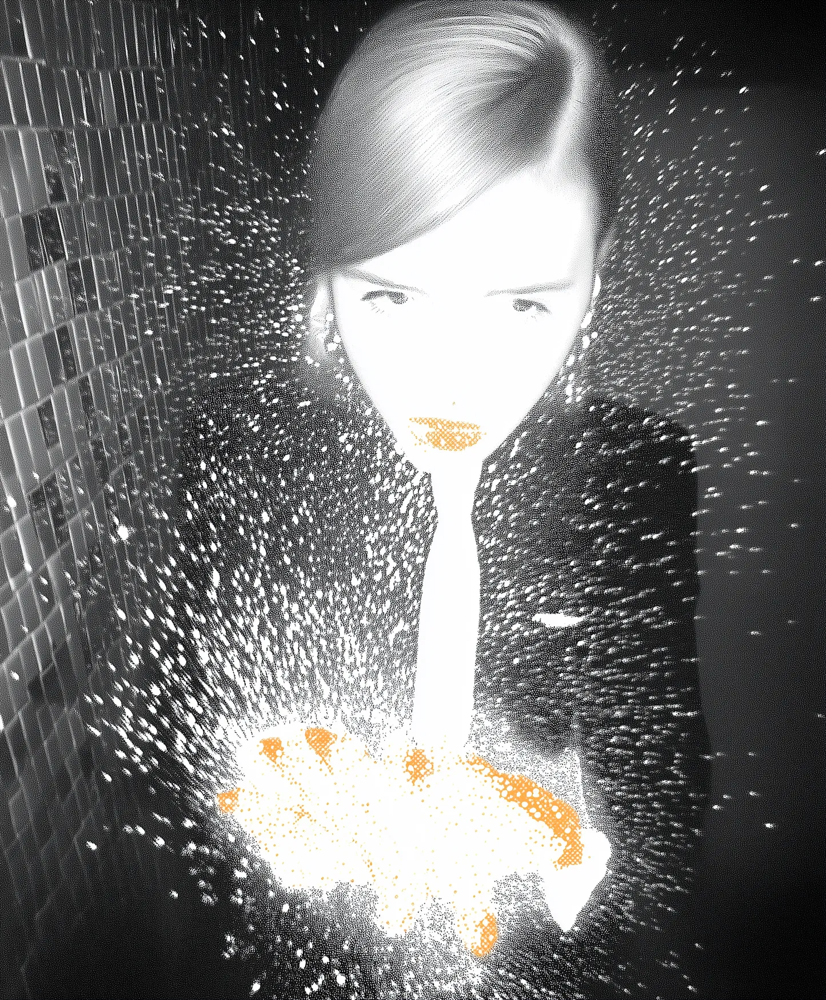

Freestanding interactive installationSan Francisco, 2026
v[an]itas
hold to choose the truth
Bowed over a sink, a figure brings up something gold: treasure, or vomit. Memento mori for the age of slop.
Katherine Titterton

Bowed over a sink, a figure brings up something gold: treasure, or vomit. Memento mori for the age of slop.